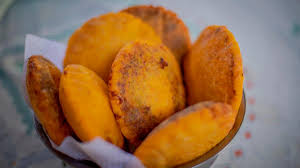
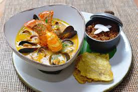
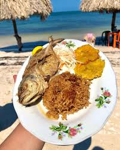
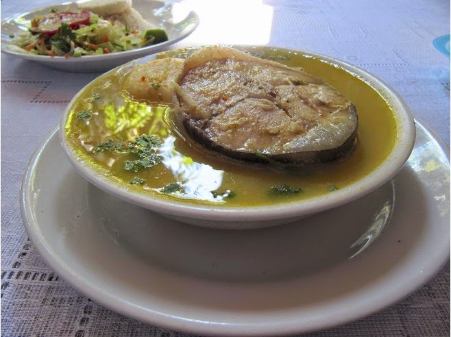
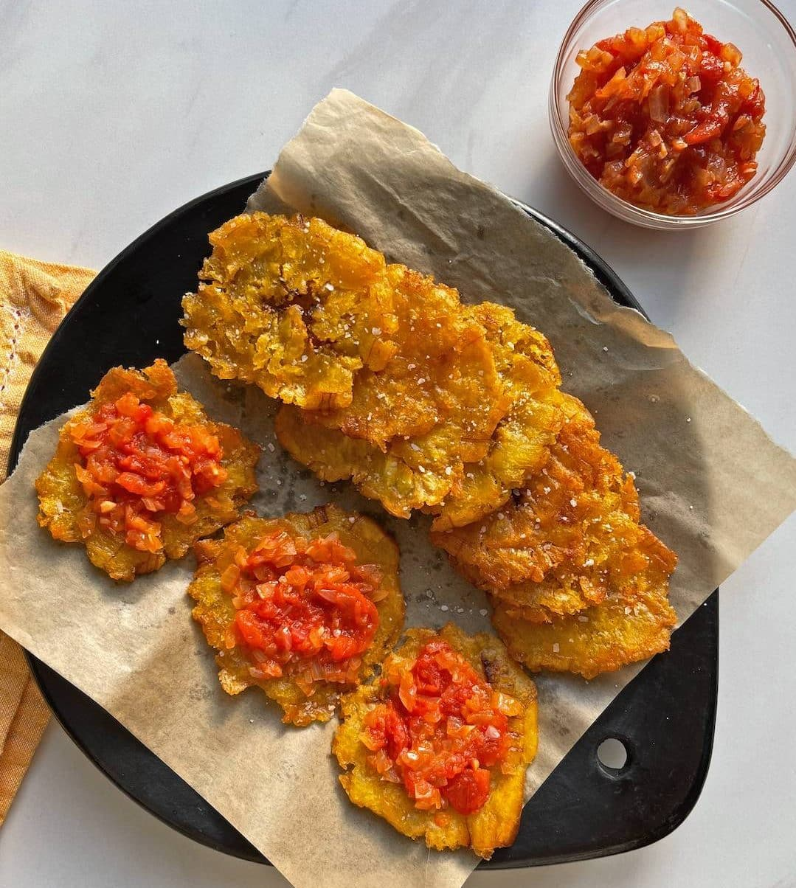
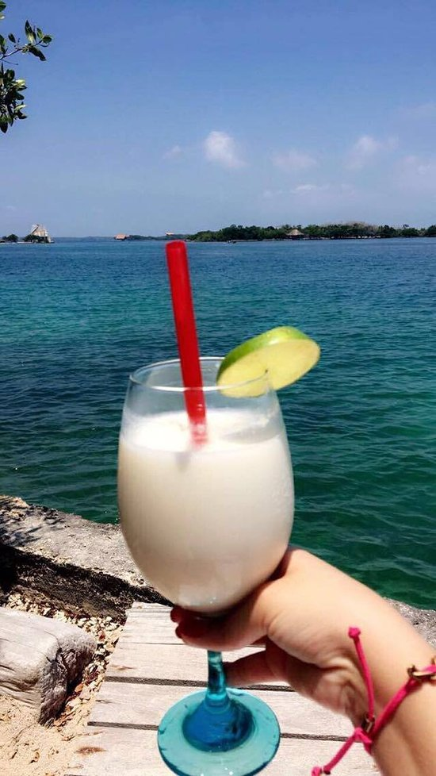
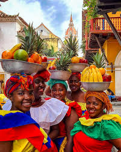

La cocina cartagenera es hija del mar Caribe, la selva tropical y la herencia africana. Cada plato que se sirve en Cartagena lleva siglos de historia entre su sabor: el ñame de los indígenas zenúes, el coco de los africanos esclavizados y el aceite de los colonizadores españoles.
Platos Típicos de Cartagena

Arepa de Huevo
El desayuno más cartagenero del mundo. Una arepa de maíz rellena de huevo y frita en aceite bien caliente. Nació en los mercados populares de Cartagena y hoy es orgullo de la ciudad. Se sirve con hogao de tomate y ají.

Cazuela de Mariscos
El plato más representativo del mar cartagenero. Camarones, langosta, almejas y pulpo del Caribe cocinados en crema de coco con especias locales. Se sirve en cazuela de barro directamente del fuego.

Arroz con Coco
Herencia directa de los esclavos africanos que trajeron el coco a las costas cartageneras. Arroz cocinado con leche de coco y titoté (coco tostado) que le da un sabor dulce y ahumado único en el mundo.

Sancocho de Pescado
Caldo espeso y reconfortante hecho con pescado fresco del Caribe, ñame, yuca, plátano y especias costeñas. El plato que los cartageneros llevan siglos preparando en sus casas para las reuniones familiares.

Patacón con Hogao
Plátano verde aplastado y frito, cubierto con hogao (salsa de tomate y cebolla cartagenera) y acompañado de queso costeño o mariscos. Infaltable en las noches de Getsemaní.

Limonada de Coco
La bebida más famosa y refrescante de Cartagena. Limón tahití, leche de coco, azúcar y hielo licuados hasta obtener una crema espumosa. El antídoto perfecto para el calor del Caribe cartagenero.
La Cocina de las Palenqueras

Las Palenqueras, mujeres de San Basilio de Palenque que recorren las calles de Cartagena, son también guardianas de la gastronomía más tradicional. Sus bateas están llenas de los sabores más auténticos de la región: mango biche con sal y limón, níspero, corozo, marañón y mamey.
Su producto más emblemático son las cocadas: dulces artesanales de coco rallado cocinado con azúcar, panela o leche condensada. Las hay blancas, de panela, de maní y de ajonjolí. Son Patrimonio Gastronómico de Cartagena y se venden desde hace siglos en las mismas esquinas del centro histórico.
Dulces y Postres Cartageneros
Cocada
Dulce de coco rallado con panela o azúcar. El postre más antiguo de Cartagena, herencia africana.
Enyucado
Torta de yuca rallada, coco y anís. Postre colonial cartagenero con ingredientes del trópico.
Caballito de Maíz
Maíz cocido envuelto en su misma hoja y servido con mantequilla y sal. Vendido en las calles del centro.
Alegrías de Millo
Barras crujientes de millo (maíz pequeño) con miel de panela. Dulce callejero ancestral de Cartagena.